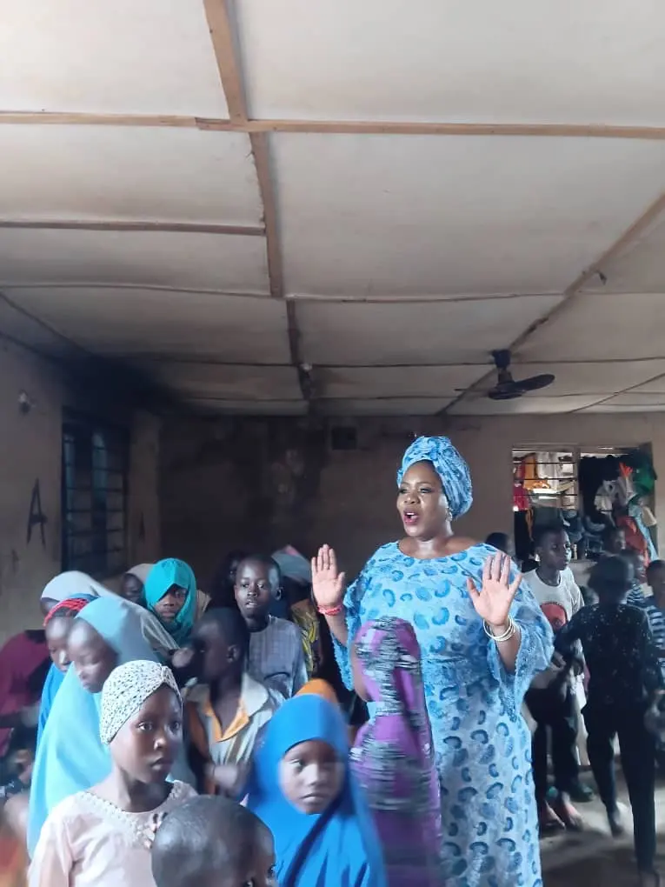
01
Education & Girl-Child Support
Education pathways and protection for under-age girls, survivors of abuse, and under-resourced mothers — keeping girls in school and building routes to self-sufficiency.
CAC RC: 7007514 · SCUML: SC 301401186 · Osun State Certified
CAC · SCUML · Osun Certified
Support a programme →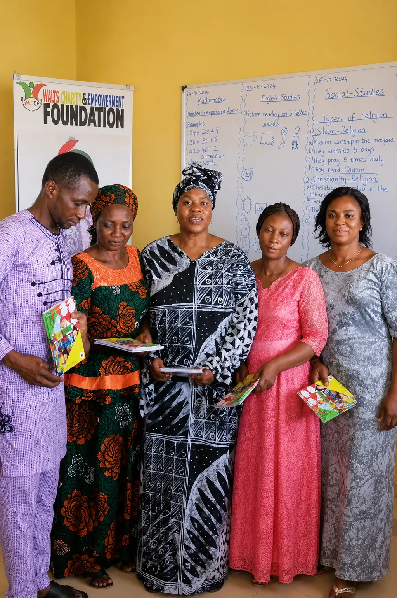
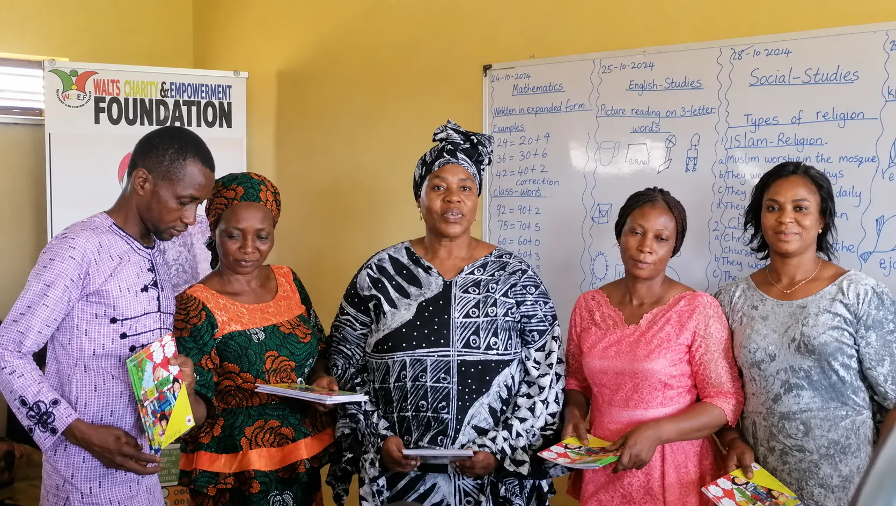
Walts Charity & Empowerment Foundation
A registered Nigerian non-profit working in rural communities — educating children, protecting girls, delivering feeding relief and empowering widows.
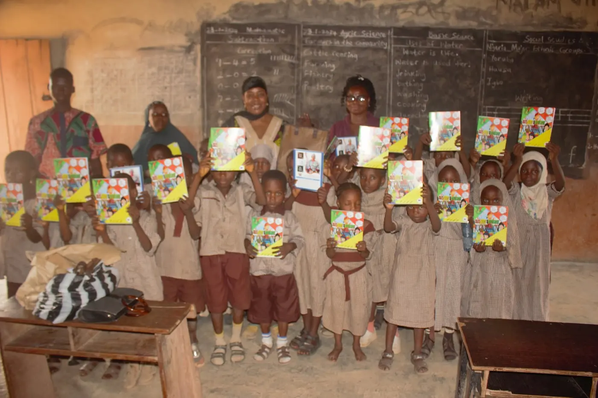
Who we are
Walts Charity and Empowerment Foundation is a duly registered Nigerian non-profit committed to restoring dignity, safety, and opportunity to the most vulnerable members of society. Operating primarily across rural communities, we serve under-age girls, widows, orphans, and survivors of abuse.
Anchored in full legal, financial and state-level regulatory compliance, we combine grassroots proximity with institutional credibility — a trusted implementing partner for organisations that want their support to reach, and visibly change, the communities that need it most.
4
Programme areas
3
Compliance certifications
2023
Incorporated
What we do
Breaking generational cycles of poverty, abuse and neglect through care, education and empowerment.

01
Education pathways and protection for under-age girls, survivors of abuse, and under-resourced mothers — keeping girls in school and building routes to self-sufficiency.
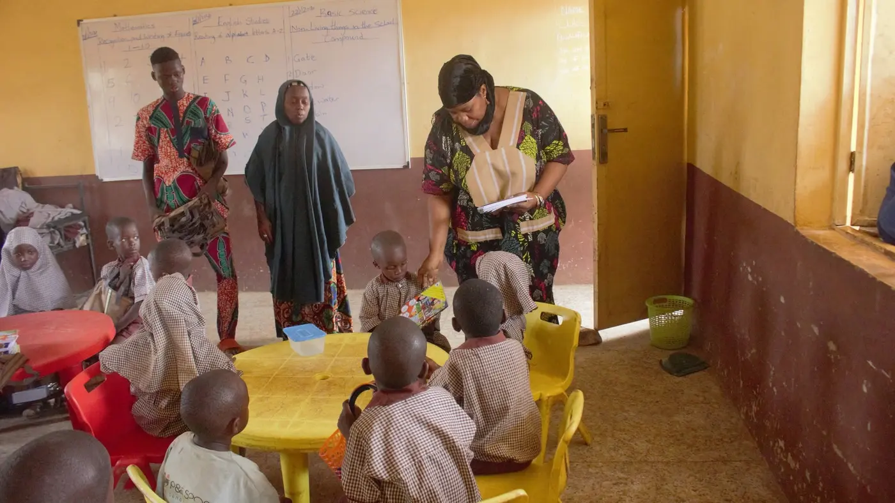
02
Healthcare, shelter and education for sick, impoverished, abandoned and orphaned children — and removal of children from abusive environments into schooling and psychosocial support.
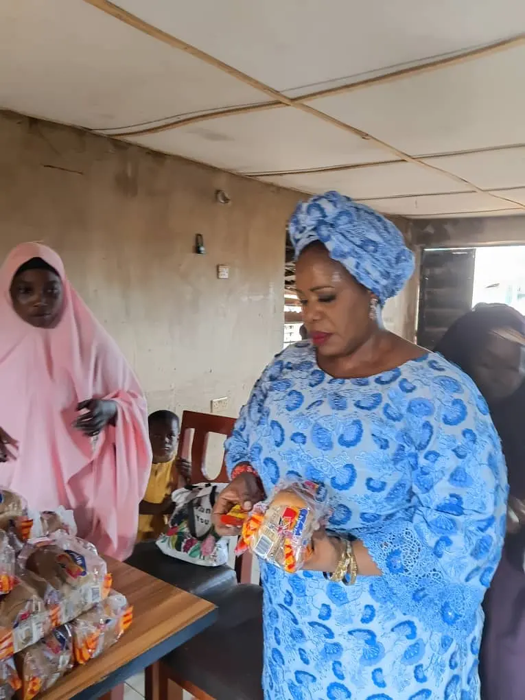
03
Food packs and community relief for households in acute need — reaching families that mainstream support too often misses, so children stay fed and in school.
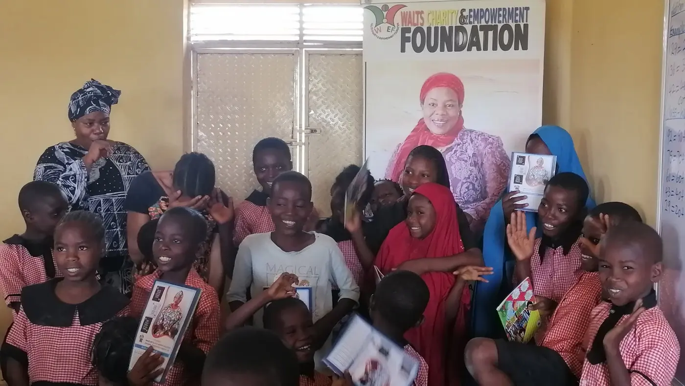
04
Financial and emotional support for young widows facing sudden loss — stabilising households and rebuilding sustainable livelihoods.
In the field
A curated look at our work reaching the communities mainstream development too often misses.
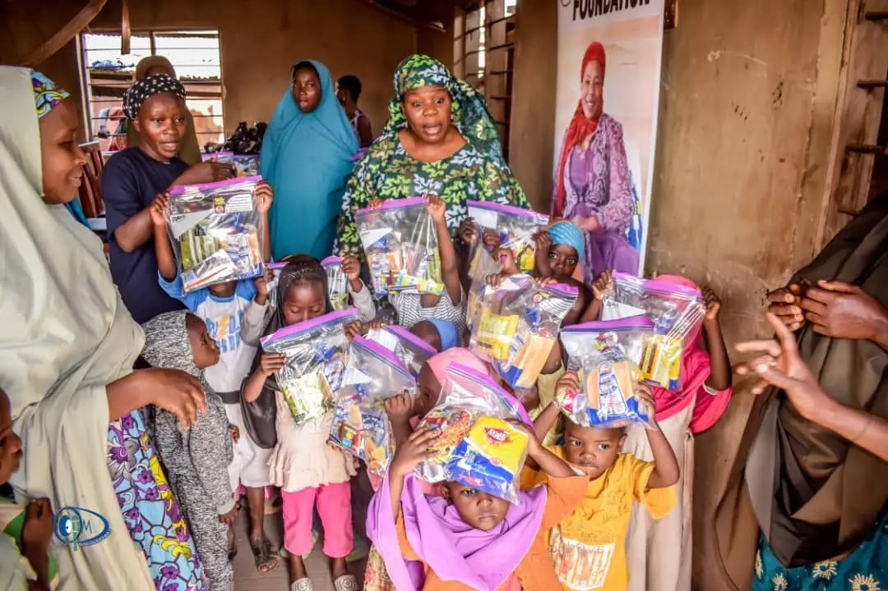

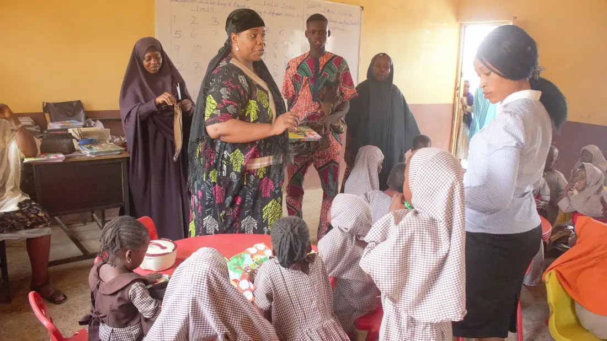
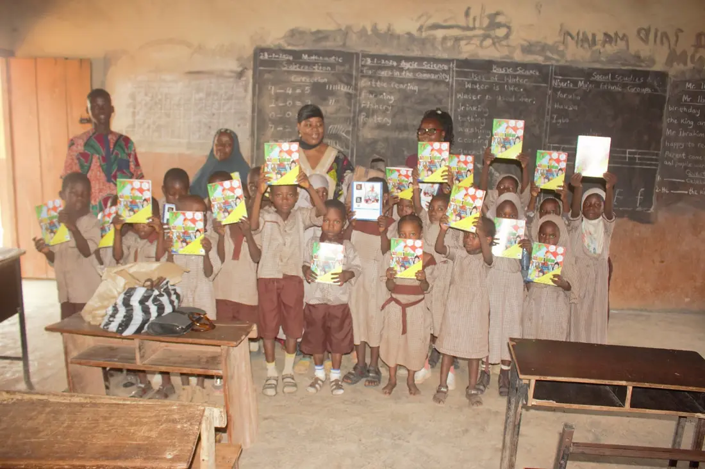
Photographs, delivery records and our public outreach log form the evidence trail behind every programme — the accountability partners expect.
A future where no woman, child, or widow in rural Nigeria is left without protection, education, or the means to rebuild her life.
Built for accountability
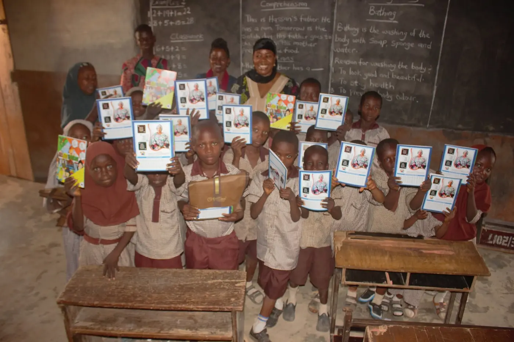
When organisations partner with Walts Foundation, their support becomes schooling for girls, food for households and livelihoods for widows — delivered on the ground and documented end to end.